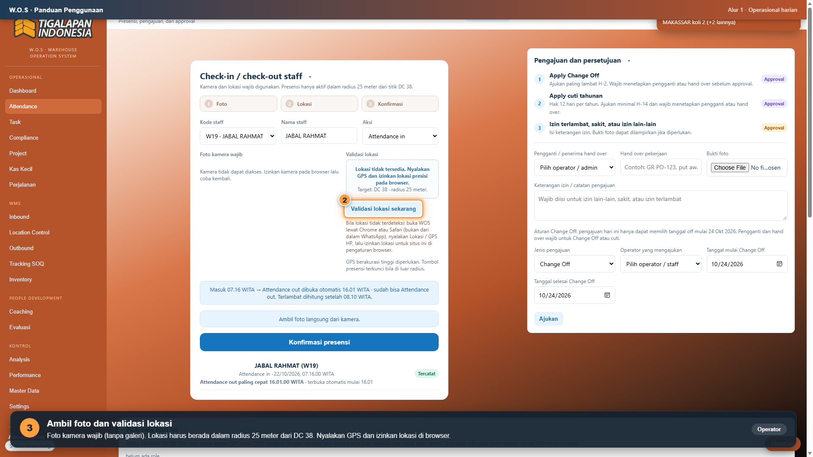
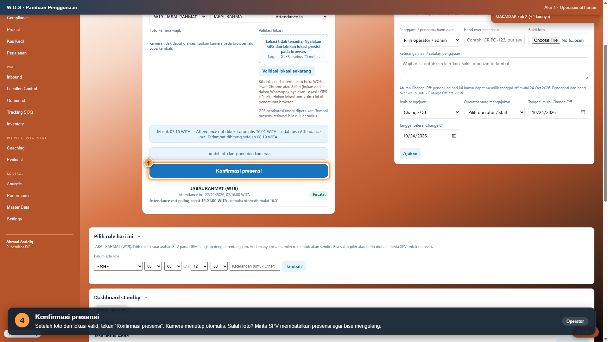
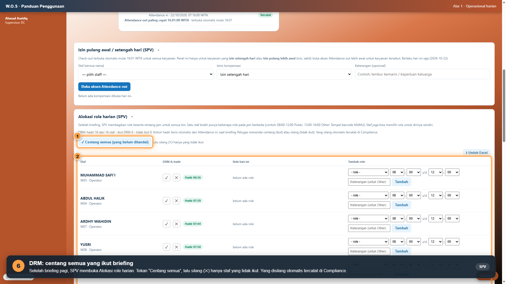
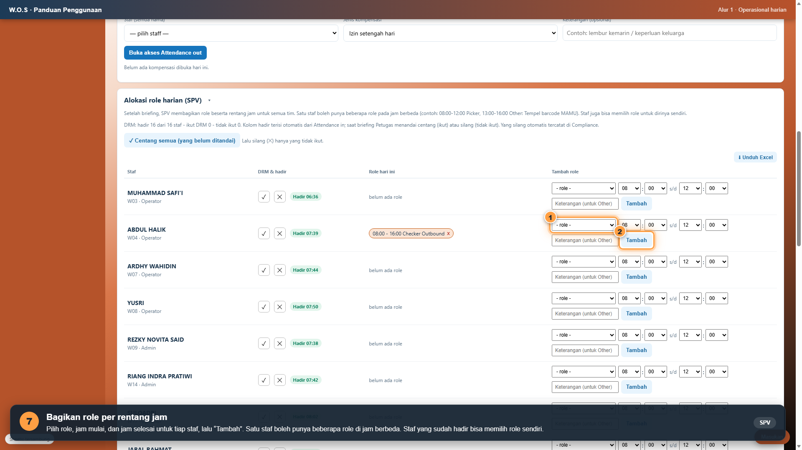
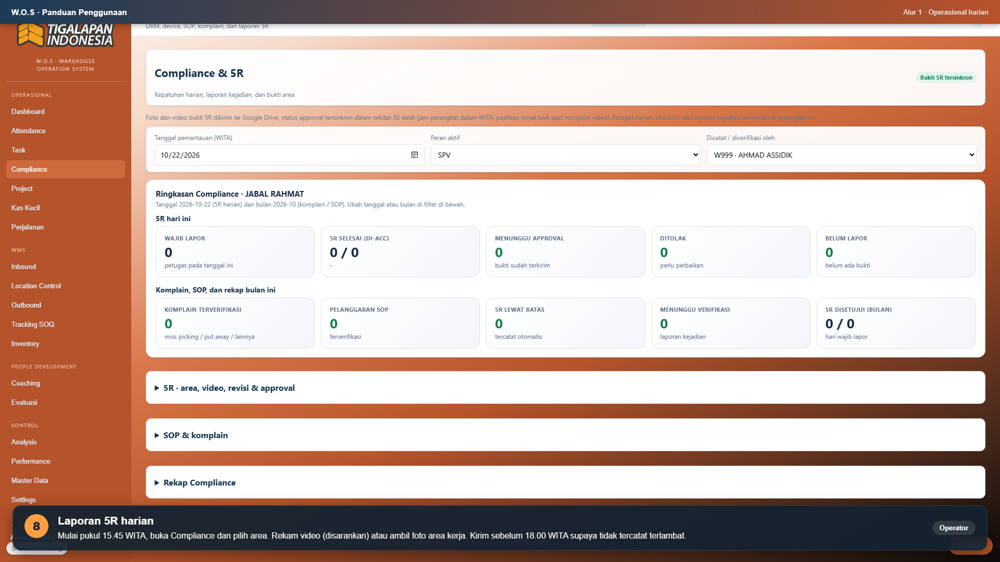
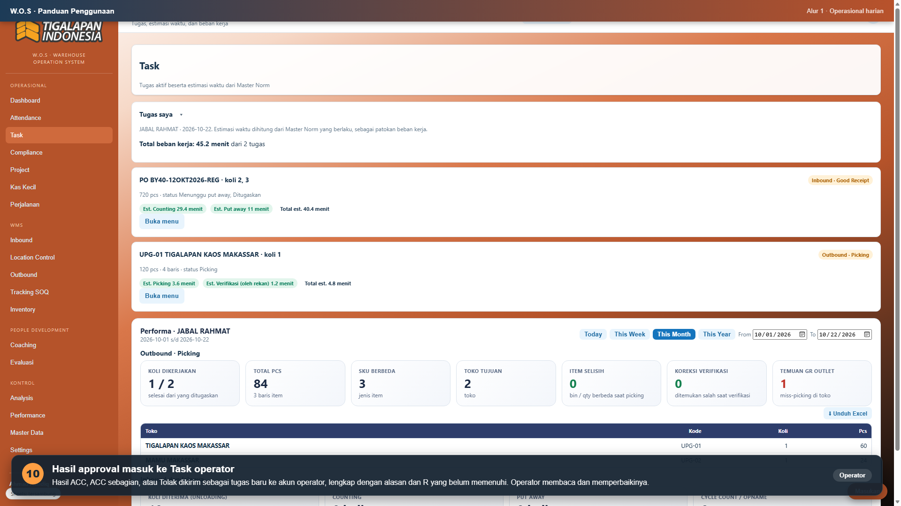

Distribusi Center 38 Tigalapan Indonesia. Check-in dan check-out lewat W.O.S wajib mulai Jumat, 23 Oktober 2026. Finger manual tetap dijalankan sebagai backup data.
Urutan yang dilakukan setiap karyawan dari datang sampai pulang. Jam dalam WITA.
Tiba di DC, buka W.O.S, lakukan Attendance in dengan foto dan lokasi. Setelah itu finger manual sebagai backup.
Terlambat dihitung setelah 08.10. Akan terlambat? Ajukan Izin terlambat di W.O.S sebelum tiba, dengan foto kendala dari kamera.
SPV menandai kehadiran DRM (centang, silang bagi yang tidak ikut). Pilih role beserta jamnya sesuai arahan SPV.
Pekerjaan datang sebagai task. Terima task, kerjakan di menu yang sesuai, dan task selesai otomatis saat pekerjaan selesai.
Rekam video atau foto area kerja di menu Compliance. Kirim sebelum 18.00. Bila SPV menolak atau memberi ACC sebagian, perbaiki dan kirim ulang (Update 5R).
Attendance out terbuka otomatis mulai 16.01. Lakukan dengan foto dan lokasi, lalu finger manual.
Contoh komposisi foto presensi yang benar




| Hal | Ketentuan |
|---|---|
| Role wajib dipilih | Setiap karyawan memiliki role pada jam kerjanya agar task dan penilaian produktivitas tercatat benar. |
| Hanya akun sendiri | Karyawan hanya memilih role untuk akunnya sendiri. SPV dapat mengatur role semua karyawan. |
| Verifikasi bukan oleh picker | Verification Pick dilakukan oleh orang lain, bukan oleh picker koli yang sama. |
| TFS ke MOKA | Dilakukan Admin Outbound. Karyawan lain hanya dapat melihat. |
5R adalah kepatuhan kebersihan dan kerapian area kerja: Ringkas, Rapi, Resik, Rawat, Rajin. Laporan 5R dikirim setiap hari kerja.


Mulai 23 Oktober 2026, W.O.S menjadi catatan utama presensi. Finger manual tetap dilakukan setiap hari untuk menjaga data cadangan, termasuk selama masa penyempurnaan sistem.
| Kendala | Yang dilakukan |
|---|---|
| “Lokasi tidak tersedia” | Nyalakan GPS HP dan izinkan lokasi untuk situs W.O.S. Buka W.O.S lewat Chrome atau Safari, bukan dari dalam WhatsApp. |
| Kamera tidak bisa dibuka | Izinkan kamera untuk situs W.O.S di pengaturan browser, lalu coba lagi. |
| Di luar radius 25 meter | Pindah ke dalam area DC, tunggu GPS akurat, lalu validasi lokasi ulang. |
| Salah foto atau salah aksi | Minta SPV membatalkan presensi, lalu ulangi. |
| Sinyal buruk | Data tersimpan di HP dan terkirim otomatis saat sinyal kembali. Pantau tulisan “Sheets: tersambung” di kiri bawah layar. Tetap finger manual. |
| Lupa password | Password awal sama dengan ID Staff. Bila tetap gagal, hubungi SPV. |
| Akan terlambat | Ajukan Izin terlambat sebelum tiba (foto kendala wajib dari kamera). Persetujuan diberikan oleh SPV. |
| Sakit atau izin lain | Ajukan lewat kartu “Pengajuan dan persetujuan” di menu Attendance, sertakan bukti foto. |
| Peran | Tanggung jawab |
|---|---|
| Karyawan (operator, admin, driver) | Check-in dan check-out W.O.S dengan foto yang benar, finger manual sebagai backup, memilih role, mengerjakan task, mengirim laporan 5R, dan memperbarui 5R bila diminta. |
| SPV | Memandu briefing dan menandai DRM, membagikan role, memeriksa foto presensi dan membatalkan yang tidak sesuai, memeriksa 5R dan memberi keputusan, serta menindaklanjuti kendala bersama HRD. |
| Manager | Memantau kepatuhan harian lewat Dashboard dan Performance, serta mendukung tindak lanjut hasil evaluasi. |
| HRD | Mencocokkan rekap presensi W.O.S dengan data finger, mengelola koreksi, dan memantau kepatuhan. |
Storyboard petunjuk penggunaan (39 gambar langkah demi langkah untuk operasional harian, inbound dan stok, serta outbound) menjadi lampiran juklak ini.
Makassar, 22 Oktober 2026